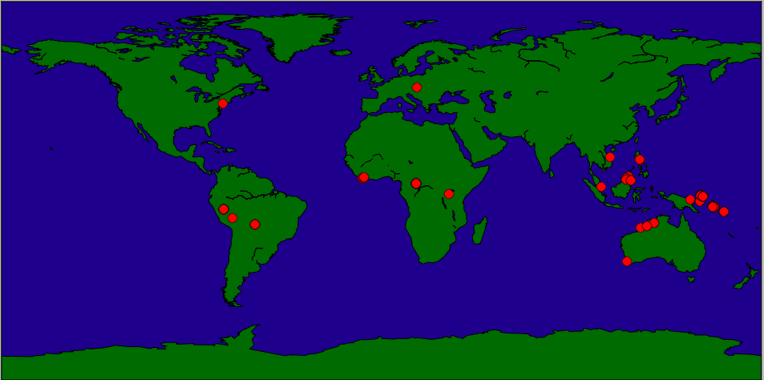

Topics: Introducing the Python matplotlib and basemap packages.

We will be using some packages that are not part of the default Python installation. To check if your Python has them, type the following at the Python shell:
import matplotlib.pyplot as plt import numpy as np from mpl_toolkits.basemap import Basemap
If there are no errors, then you already have these packages. If not, you will need them. The easiest way is to get the popular packages for scientific computing is to download anaconda distribution of Python. It will install a second copy of Python on your computer (you can still use the old). You can also install matplotlib and numpy separately.
basemap is an extra package for drawing geographic maps. It is not part of many installations and needs to be added. In the anaconda Python, if you type:
from mpl_toolkits.basemap import Basemapit will give you the exact command to download basemap. You can also download basemap directly:
conda install -c https://conda.anaconda.org/anaconda basemap
The downloads will take about 15-30 minutes, depending on the internet speed. You might want to start the downloads and go on to the next part of the lab (which does not depend on either).
While you are waiting for matplotlib to download, let's get some data to use for our mapping.
Many programs will export data in Comma-Separated-Values (CSV) format. This includes almost all of the specimen databases at the museum. We will focus on the Vertebrate Zoology databases since some (Ichthyology & Ornithology) include location information for many of their specimens and allow direct downloads from their webpages.
For today's lab, you will need a CSV file with at least 10 specimens for which location data has been stored (the LATITUDE and LONGITUDE columns). With that caveat in mind, choose specimens that would be useful for your thesis or interest you.
CSV files store tabular information in readable text files. The files downloaded above have information separated by commas (using tabs as delimiters is also common). Here is a sample line:
"DOT 84 FLUID 11383",Ceyx lepidus collectoris,Solomon Islands,New Georgia Group,Vella Lavella Island,Oula River camp,,,,07 47 30 S,156 37 30 E,Paul R. Sweet,7-May-04,,PRS-2672,,,"Tissue Fluid "
All lines are formatted similarly: they start with the catalog number, then idenfication of the specimen, followed by location information, when and who collected it, and sometimes other fields describing the specimen (e.g. sex, age, preparation) The first line of the file gives the entries in the order they occur in the rows. Here is the first line for ornithology records:
CATALOG NUMBER,IDENTIFICATION,COUNTRY,STATE,COUNTY,PRECISE LOCALITY,OCEAN,ISLAND GROUP,ISLAND,LATITUDE,LONGITUDE,COLLECTOR(S),COLLECTING DATE FROM,COLLECTING DATE TO,COLLECTORS NUMBER,SEX,AGE,PREPS
Python has a built-in module to manipulate CSV files. The basic commands are:
We will use the coordinates for the next part of the lab, so, let's store them in a list:
#Open the file:
f = open("AMNH-Ornithology-Internet-Export.csv", "rU")
#Using the dictionary reader to access by column names:
reader = csv.DictReader(f)
#Set up arrays to hold the information extracted from the csv file:
latStrings = []
longStrings = []
ident = []
#Traverse the file by rows, filtering for those specimens with GIS data:
for row in reader:
if row['LATITUDE'] != '':
ident.append(row['IDENTIFICATION'])
latStrings.append(row['LATITUDE'])
longStrings.append(row['LONGITUDE'])
f.close()
#Print out latStrings to make sure it is working:
print latStrings
Today, we will use one small part of the matplotlib library. It is a very popular for presenting results in 2D plots to be used in papers and presentations. We will plot GIS coordinates that we extracted from the database. Over the next several weeks, we will use other features of matplotlib and the popular numerical analysis package numpy.
The basemap package of matplotlib allows you to customize maps and then plot them using the standard matplotlib library. Let's first draw some maps, using the build-in projections, and then add points to represent the GIS coordinates of the specimen information from the database.
The basemap package follows a familiar format: it stores information in an object and provides functions for manipulating that object. We have seen this before with the turtle objects or regular expression match objects. For basemap, the objects are maps (from the Basemap class). The Basemap functions include the ability to change projections, regions, borders, and colors.
To get started, let's draw a simple map of the world. It takes a bit for it to run (you will get a warning telling you this):
import matplotlib.pyplot as plt import numpy as np from mpl_toolkits.basemap import Basemap m = Basemap() m.drawcoastlines() plt.show()To continue, close the map window.
To make the map more interesting, let's add some color. We can do this by using the fillcontinents() function:
m.fillcontinents(color='darkgreen',lake_color='darkblue')To also fill in the oceans:
m.drawmapboundary(fill_color='darkblue')
(Feel free to alter the colors to make a more attractive map.)
If you would like to use satelite data (NASA 'Blue Marble' imagery), there is a function, bluemarble()
from mpl_toolkits.basemap import Basemap import matplotlib.pyplot as plt m = Basemap() m.bluemarble() plt.show()As well as an option to show the map with shaded relief (shadedrelief()) and etopo relief (etopo()). Try these various `backgrounds' (see map background for more options).
There are also options to change the region of the map displayed as well as the projection. The function that constructs the map object has many, many options that control the region projected, the type of projection, and the resolution of coastlines and other features.
For example,
map = Basemap(projection='ortho',lat_0=45,lon_0=-100,resolution='l')sets up an orthographic map projection with perspective of satellite looking down at 50N, 100W. It uses low resolution coastlines.
Some common projections and useful parameters:
Some useful things to add to your map:
The goal of this lab is to plot the location data from the CSV file to a map. We'll first plot a single point, the location of New York City, and then move on to the specimen data.
The coordinates for New York City are: 40.7127 N, 74.0059 W. To use for this package, we use the following conversion:
x,y = m(-74,40) m.plot(x,y,'ro',markersize=10)The 'ro' is a matplotlib option to plot red circles and markersize controls how large the plotted point appears.
x, y = m(longs[i],lats[i])(remember that longitudes correspond to x-values and latitudes to y-values.)
m.plot(x,y,'ro',markersize=10)
For each lab, you should submit a lab report by the target date to: kstjohn AT amnh DOT org. The reports should be about a page for the first labs and contain the following:
Target Date: 29 February 2016
Title: Lab 5:
Name & Email:
Purpose: Give summary of what was done in this lab.
Procedure: Describe step-by-step what you did (include programs or program outlines).
Results: If applicable, show all data collected. Including screen shots is fine (can capture via the Grab program).
Discussion: Give a short explanation and interpretation of your results here.
This course will use the on-line Rosalind system for submitting programs electronically. The password for the course has been sent to your email. Before leaving lab today, complete the first two challenges.